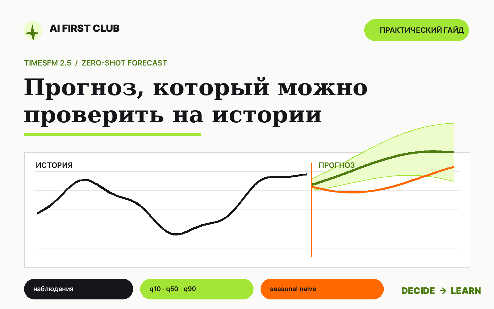
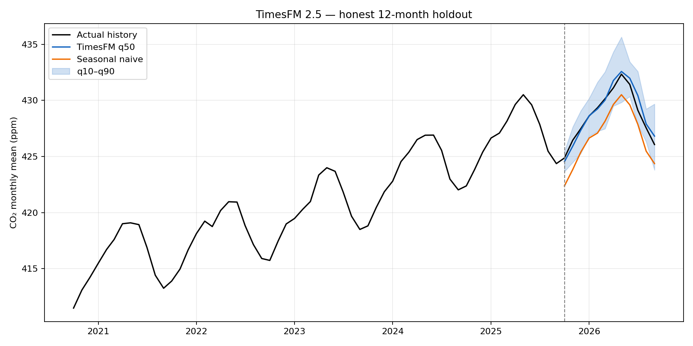
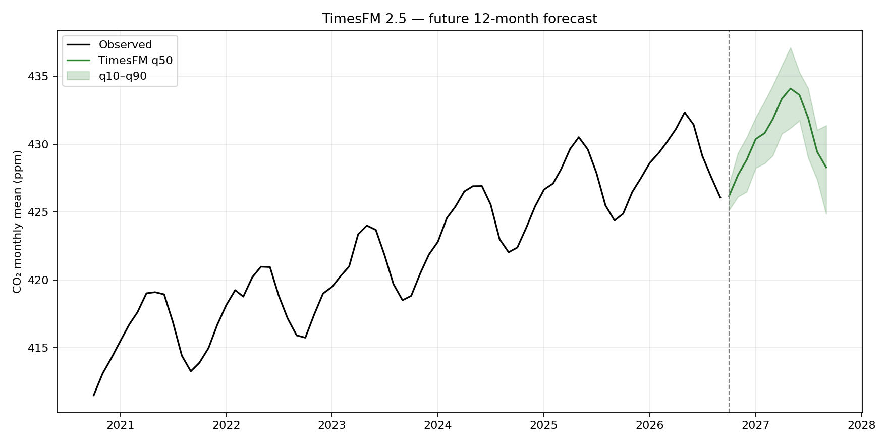

TimesFM 2.5 self-hosted
Apache-2.0 для кода и весов до 2.5 по уведомлению репозитория. Подходит как коммерчески допустимая локальная стартовая ветка с вашей юридической и security-проверкой.
Используем в гайдеЗапустите коммерчески допустимый self-hosted TimesFM 2.5, получите q10/q50/q90, сравните модель с простым seasonal-naive и не отдавайте прогнозу право принимать решения.

TimesFM — предобученная модель Google Research для числовых временных рядов. Она не угадывает события. Она продолжает структуру ряда: ежедневные заказы, почасовой трафик, недельные обращения, показания датчика.
Можно получить стартовый прогноз без обучения отдельной нейросети под каждый ряд. Это ускоряет первый baseline.
Подготовку данных, хронологическую проверку, сравнение с простым правилом, мониторинг интервалов и человеческое решение.
Основа: оригинальная работа TimesFM и официальный репозиторий.
Номер пакета Python и версия весов — не одно и то же. В проверенном окружении установлен пакет timesfm==3.0.2, но загружается точный checkpoint TimesFM 2.5.
Apache-2.0 для кода и весов до 2.5 по уведомлению репозитория. Подходит как коммерчески допустимая локальная стартовая ветка с вашей юридической и security-проверкой.
Используем в гайдеОтдельная non-commercial лицензия. Не подставляйте google/timesfm-3.0-pytorch в self-hosted коммерческий продукт.
Управляемый коммерческий путь: billing, регион, квоты, доступы и жизненный цикл API. Статус Preview/Pre-GA и синтаксис нужно перепроверять в день внедрения.
ОпциональноПроверено 13 ноября 2026: README, Apache-2.0 repo license, TimesFM 2.5 model card.
Ответьте по порядку. Если хотя бы один критический пункт не проходит, не маскируйте проблему более сложной моделью.
Чистый регулярный ряд, понятный horizon, несколько циклов, baseline готов.
История короткая, есть stockout/смена продукта или нестабильная частота. Сначала ограниченный тест.
Нужна причинность, оптимизация, trading/medical decision или данных почти нет.
target: units_sold
frequency: 1d
series_id: store_17__sku_42
as_of: 2026-11-12T00:00:00Z
horizon: 28
business_decision: inventory_planning
baseline: seasonal_naive_7d
allowed_action: recommendation_onlyuv venv --python 3.10 .venv
source .venv/bin/activate
uv pip install --index-url https://download.pytorch.org/whl/cpu torch==2.7.1
uv pip install -r requirements-cpu.txt
python -V
python -c "import torch, timesfm; print(torch.__version__)"environment-freeze.txt. В воспроизводимом пути нет неприкреплённого «latest».MODEL_ID = "google/timesfm-2.5-200m-pytorch"
MODEL_REVISION = "1d952420fba87f3c6dee4f240de0f1a0fbc790e3"Проверенный model.safetensors: 925,181,104 bytes, SHA-256 2f776efe6245e42b24bc4153ffdf61810140210e4bd3b01fb21f7aa779ab6ce8.
python timesfm_workflow.py --data noaa_co2_snapshot.csv --folds 5. Фрагменты ниже объясняют каждый шаг готового файла.import numpy as np
import pandas as pd
df = pd.read_csv("noaa_co2_snapshot.csv", comment="#")
required = {"year", "month", "average"}
assert required.issubset(df.columns)
df["date"] = pd.to_datetime({
"year": df["year"], "month": df["month"], "day": 1
})
df["y"] = pd.to_numeric(df["average"], errors="coerce")
df = df[["date", "y"]].sort_values("date").reset_index(drop=True)
assert not df["date"].duplicated().any()
assert df["y"].notna().all()
expected = pd.date_range(df.date.min(), df.date.max(), freq="MS")
assert expected.equals(pd.DatetimeIndex(df.date))
values = df["y"].to_numpy(dtype=np.float32)
dates = df["date"].to_numpy()date, y и массив float32.HORIZON = 12
train = values[:-HORIZON]
actual = values[-HORIZON:]
assert dates[:-HORIZON].max() < dates[-HORIZON:].min()max(train_date) < min(test_date); будущие actual нигде не входят в features.model = timesfm.TimesFM_2p5_200M_torch.from_pretrained(
MODEL_ID, revision=MODEL_REVISION, torch_compile=False
)
model.compile(timesfm.ForecastConfig(
max_context=512,
max_horizon=128,
per_core_batch_size=1,
normalize_inputs=True,
use_continuous_quantile_head=True,
fix_quantile_crossing=True,
))point, quantiles = model.forecast(horizon=12, inputs=[train])
q10 = quantiles[0, :, 1]
q50 = quantiles[0, :, 5]
q90 = quantiles[0, :, 9]
assert np.all(q10 <= q50)
assert np.all(q50 <= q90)(1, 12) и (1, 12, 10); в этом API point совпадает с q50.q10 ≤ q50 ≤ q90, все значения finite.Если сложная модель не выигрывает у простого правила на тех же датах, у вас пока нет причин усложнять production.
def seasonal_naive(train, horizon=12, season=12):
if len(train) < season:
raise ValueError("history shorter than season")
return np.resize(train[-season:], horizon)mae = np.mean(np.abs(actual - forecast))
wape = np.abs(actual - forecast).sum() / np.abs(actual).sum()coverage = np.mean((actual >= q10) & (actual <= q90))
mean_width = np.mean(q90 - q10)origin_1: train → 2021-09, test 2021-10…2022-09
origin_2: train → 2022-09, test 2022-10…2023-09
origin_3: train → 2023-09, test 2023-10…2024-09
origin_4: train → 2024-09, test 2024-10…2025-09
origin_5: train → 2025-09, test 2025-10…2026-09NOAA Mauna Loa CO₂ — это воспроизводимый технический пример, а не доказательство результата на ваших продажах.


python timesfm_workflow.py --data noaa_co2_snapshot.csv --folds 5d895fb5b4a59fb5e4cd98e69b7667fe5bef595c6581f630852b12cb41c07f675.uv pip install 'jax[cpu]==0.6.2'
python timesfm_workflow.py --data noaa_co2_snapshot.csv --folds 5 --with-covariatesjaxlib wheel потребовал AVX, которого нет у CPU/OS. Код включён, но метрики covariates не заявляются.available_as_of.timestamp, series_id, target и не меняйте pipeline оценки.timestamp,series_id,target
2026-01-01,store_17__sku_42,118
2026-01-02,store_17__sku_42,121actionable=false.{
"request": {
"series_id": "store_17__sku_42",
"as_of": "2026-11-12T00:00:00Z",
"horizon": 28,
"purpose": "inventory_planning"
},
"response": {
"point": [],
"quantiles": {"p10": [], "p50": [], "p90": []},
"model_version": "timesfm-2.5-pinned",
"license_route": "apache-2.0-self-hosted",
"backtest_status": "pass",
"warnings": [],
"actionable": false
}
}Это не бесплатная локальная замена. Выбирайте маршрут только если Cloud billing, residency, Preview-ограничения и governance приемлемы.
-- Семантический skeleton: синтаксис перепроверить по текущим Google Cloud docs
SELECT *
FROM AI.FORECAST(
TABLE `project.dataset.series_table`,
data_col => 'target',
timestamp_col => 'timestamp',
id_cols => ['series_id'],
horizon => 28
);Официально: TimesFM model in BigQuery ML, AI.FORECAST, AI.EVALUATE.
Все основные утверждения опираются на первичные источники и на сохранённые bytes проверенного прогона.
Версии, установка, API, license split и предупреждение об отсутствии официальной поддержки open-версии.
Checkpoint и структура point/quantile output.
Scope и zero-shot framing.
Источник воспроизводимого monthly dataset.
CPU-only local-cache run: 44,064 секунды на этом хосте. 12 holdout rows, 60 rolling rows, 12 future rows. Все значения finite; q10 ≤ q50 ≤ q90. Это измерение одного окружения, не SLA.
Материал образовательный. Прогнозы не являются гарантией результата и не должны напрямую управлять торговыми, медицинскими, ценовыми или другими высокорисковыми действиями.